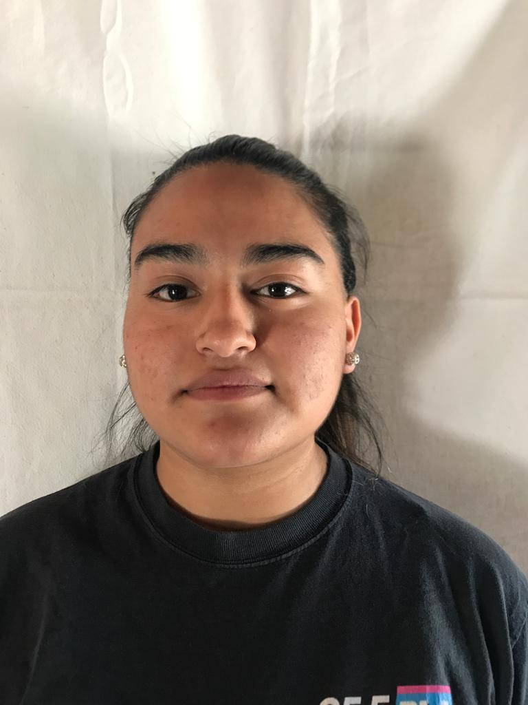

Lucila Juanita Medina


Formación
Secundaria
- E.P.E.T N°5 - Santa Maria - Catamarca. Técnico en Informática Profesional y Personal, cursando 7mo año. (2020-Actualmente)
- Escuela N°217 Ángel Maria Soria - El Bañado - Tucumán. (2018-2019)
Primaria
- Escuela N°32 Doctor Alfredo Palacios - Colalao del Valle - Tucumán.
Cursos y Capacitaciones
- Capacitación de Comunicación Institucional en Redes Sociales - Santa Maria-2024.
- Testing 2023 - Universidad Tecnológica Nacional, a distancia.
- Capacitación de las RAEs en la empresa Electro Greem - Tucumán 2023.
Experiencia Laboral
- Practicas Profesionalizantes (salida a escuela de Chañar Punco, desbloqueo de netbooks-reparacion)
- Mosa-Finca Viñas del Chañar-Colalao del Valle - 2023.
- Practicas Profesionalizantes (mantenimiento de equipos-Tutorías)-E.P.E.T. N°5-Santa María-Catamarca-2023.
- Emprendedora de postres dulces “Nalu” (2023-Actualmente).
Aptitudes
- Puntualidad
- Responsabilidad
- Trabajo en equipo
- Proactivo
Datos Personales
Nombre y Apellido: Lucila Juanita Medina
Fecha de Nacimiento: 16/10/2005
D.N.I: 45.859.058
C.U.I.L: 27-45859058-9
Edad: 18
Estado Civil: Soltera
Dirección: Alsina 440. Hacia el sur a media cuadra del Hotel de Turismo
Contacto
Tel: 3838400961
Correo: lucilamedina938@gmail.com
Facebook: Lucila Medina
Instagram: lucilaaaaa_mdn